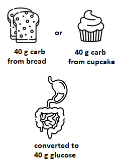

Respect the additional challenges, particularly around food, and
responsibilities a person with type 1 diabetes experiences.
Determine an appropriate balance between desiring to help,
protect, or advise and respecting the person's autonomy to make
their own decisions.
Help in ways that will be appreciated.
Introduction
Some of the most common responses heard when a person shares that
they have type 1 diabetes are related to food. Many of these
responses are based on misinformation or relate to type 2 diabetes.
Let's take a look at a few common responses.
What can a person with type 1 diabetes eat?
The short answer is ... anything!
You are likely familiar with the diet advice given to type 2
diabetics: eat healthy foods that promote weight loss. Weight loss
reduces insulin resistance, and reducing insulin resistance can cure
type 2 diabetes.
Unfortunately, weight loss does NOT cure type 1 diabetes.
There is no diet, supplement, spice, essential oil, or other
"natural" treatment that can cure type 1 diabetes.1 Some
diets and supplements can reduce insulin resistance, but a person
with type 1 diabetes who reduces their insulin resistance still
needs insulin, just less of it.
Josh
"It really bothers me when others tell me I could get off insulin
if I changed my diet. I can't get off insulin! Even if I only
drink water and eat no carbohydrates, I still need to inject
insulin to live. My pancreas doesn't produce insulin!"
The primary goal for those with type 1 diabetes is achieving stable,
normal-range blood glucose levels. Matching food intake to insulin
dosages is critical. Eating a healthy diet that minimizes the risk
for heart disease (a leading cause of death for those with diabetes)
is also important.
There are a wide range of diet options available to a person with
type 1 diabetes. The best option is the one that aligns with the
person's other health concerns (e.g., Celiac disease and kidney
disease are fairly common among those with type 1 diabetes) and
their personal goals and lifestyle.
Key Take-aways
NO diet will eliminate a person's need for insulin.
The primary goal of a person with type 1 diabetes is to take the
amount of insulin that will correctly cover the food they eat.
The best diet strategy for a person with type 1 diabetes depends
on many factors.
How do they know how much insulin to take?
A person with type 1 diabetes has to think about how much insulin
they should take for every bit of food they eat. Even if they take a
fixed amount of insulin at the same time each day, they still have
to make sure to EAT the appropriate amount of food to match that
insulin dose.
So, how do they do it?
Two common strategies are described below.
Diabetic Exchange diet
The diabetic exchange diet is an older strategy. It works well for
those who follow a consistent schedule. It ensures the person eats
an appropriate balance of healthy carbohydrates, fats, and proteins
each day.
It is very rigid. The person must inject insulin at the same time
each day. The food they eat has the same balance of carbohydrates,
fats, and proteins from one day to the next — the person
cannot eat less or more depending on how hungry they feel.
Carb Counting
This strategy is what most of those diagnosed with type 1 diabetes
in the last 20 years or so have been taught. It is a flexible
strategy that allows people to eat the foods they want to eat when
they want to eat them. It allows those with type 1 diabetes to eat
the same foods as their peers and their families or to follow other
diets (e.g., autoimmune protocol, keto diet, whole foods diet).
As we saw in the section
Type 1 Diabetes: The Basics, the body breaks down all carbohydrates ("carbs") we consume into
glucose. The appropriate dose of insulin to cover the carbohydrates
is the same no matter what form the carbohydrates have initially
(although how fast the carbohydrates are digested depends on whether
they are simple or complex).

40 g of carbs from bread and 40 g of carbs from cupcake are both
digested into 40 g of glucose
People who count carbohydrates use an insulin-to-carb ratio to
determine how much insulin to take to cover a meal depending on the
number of carbohydrates they plan to eat.
Watch the following video to see how a person counts carbohydrates
in a simple meal.
The body also converts fat and protein to carbohydrates, so some
people with type 1 diabetes also count the fat and protein content
of their foods, particularly if they follow an extremely
low-carbohydrate diet (e.g., keto).
Key Take-aways
Carb counting is a strategy that people with type 1 diabetes can
use to calculate how much insulin to take with a meal.
When a person with type 1 diabetes makes a significant change to
their diet (e.g., adopting a keto diet), the person will need to
learn new ways of determining appropriate insulin dosages. This
can be very challenging.
Why is the timing of the insulin injection important?
There are two major decisions a person with type 1 diabetes must
make when eating:
deciding HOW MUCH insulin to take, and
deciding WHEN to take it.
When a person eats, the food is digested and converted to glucose.
When the body of a person without diabetes senses extra glucose in
the bloodstream, it immediately sends insulin to move the glucose
out of the blood and into the cells.
A person with type 1 diabetes injects insulin into fat tissue.
Modern rapid-acting insulins (see more about insulins in
Medications and Devices)
take about 15 minutes to start acting — it's not immediate.
Meanwhile, the carbohydrates in the food may be digested and
converted to glucose quickly or slowly. Timing the insulin injection
so that the insulin starts to act at the same time blood glucose
levels start to rise is challenging.
Most people with type 1 diabetes respond to this challenge using
routines and preparation. A common strategy is to inject insulin
about 15 minutes before eating. However, certain situations make
this strategy hard to apply:
when the amount of carbohydrate in the food is unknown (e.g., the
food was prepared by someone else)
when the amount of food that will be eaten is unknown
when the time the food will be served is unknown
Devin
"I struggle with Holiday meals. There is pressure to eat in
time with others, but the time the food is served and the carb
count is not predictable. Usually I try to watch my continuous
glucose monitor to see what my blood sugar is doing before the
meal and prepare as best I can. I often do end up forgoing
most of the carb-laden stuff and stick with turkey and simple
veggie choices. Although there's always that host who
encourages me to fill my plate. I'm happy when they
understand!"
Key Take-aways
Timing insulin injections to match how quickly the digestive
system breaks down the carbohydrates into glucose helps with
good blood glucose control.
What about sugar?
People often think those with type 1 diabetes can't have sugar. This
isn't true. While it's not healthy, it doesn't need to be avoided
entirely.
Sugar is not good for anyone. It's processed, and it quickly spikes
blood sugar levels. And, twenty years ago or more, diets prescribed
for those with type 1 diabetes (e.g., the diabetic exchange diet)
did not permit sugar. However, that approach was largely abandoned
because some of those with type 1 diabetes (especially children)
developed unhealthy eating habits as a result. They didn't learn to
eat to match hunger levels; many sneaked treats (read about the
relationship between type 1 diabetes and disordered eating in the
section on
Mental Health).
People who develop type 1 diabetes can live with this disease for 70
years or more, so a long-term view is generally better. Forcing
those with type 1 diabetes to restrict their diet (e.g., avoid
sugar) actually corresponds with them being less effective at
self-managing their diabetes. So, if you see a person with type 1
diabetes eating a sugary treat, either leave them alone or subject
everyone in the room to the same scolding about the dangers of
sugar; don't single out the person with diabetes.
Mila
"I attended a lunch function today and someone shared half
their cupcake with me. Another person told me, "You shouldn't
be eating that! What am I going to do if you pass out?" It
became a whole conversation about what I should and should not
do. I hate that."
Amal
"I feel like if I don't defend myself and explain that I have
given insulin to cover what I ate, then it looks like I'm a
'bad' diabetic. I shouldn't care about what others think, but I
do, especially when someone thinks I'm killing myself."
Isn't diabetic candy better?
You've probably seen "diabetic candy" sold at a pharmacy or grocery
store. This candy is typically not free from carbohydrates —
it's free from sugar; in addition, it often contains sugar alcohols,
which may affect blood glucose levels in those with type 1 diabetes
and can cause gastrointestinal issues. Despite the marketing, these
candies are best avoided entirely.
Why autonomy is important
One of the major challenges people with type 1 diabetes face is when
others try to regulate their food. It can be frustrating and, if
done in public, humiliating.
People with type 1 diabetes who feel free to make their own
decisions and who feel supported even when they make the wrong
decisions tend to do better at managing their disease. They feel
better emotionally, too. Those who experience blame or
overprotective behaviours from others are less likely to monitor
their blood sugars or adjust their insulin doses, and are more
likely to binge eat.2
Deepa
"I went to a BBQ today with one of my oldest friends. She knows
about my diabetes and has asked me questions to find out more
about it, how I know how much insulin to give, and so on. Today
after our lunch her mom mentioned that there were desserts but she
didn't know if they were diabetic friendly. My friend responded,
'Don't worry, Mom. If she wants to eat dessert she knows how to
cover it. She can eat what she wants.' Mom said, 'OK, great!' My
little type 1 heart sang with pride and gratitude!"
Key Take-aways
A person with type 1 diabetes can eat sweets. They just need to
cover the carbohydrates with insulin.
Avoid critical comments about the person's food choices.
Did you get all that?
Try a few questions.
Personalize It
Talk to the person you know with type 1 diabetes.
Find out what kind of diet and/or diet strategies they use to manage
their diabetes.
How important are food labels?
What nutritional information do they look for?
What concerns do they have around eating, especially in a
situation like a potluck or hosted dinner?
What frustrations have they experienced in the past?
What would help make them feel more at ease?
References
Grossman, L. D., Roscoe, R., & Shack, A. R. (2018).
Complementary and alternative medicine for diabetes.
Canadian journal of diabetes, 42, S154-S161.
Ahola, A. J., & Groop, P. H. (2013). Barriers to self-management
of diabetes. Diabetic Medicine, 30(4), 413-420.